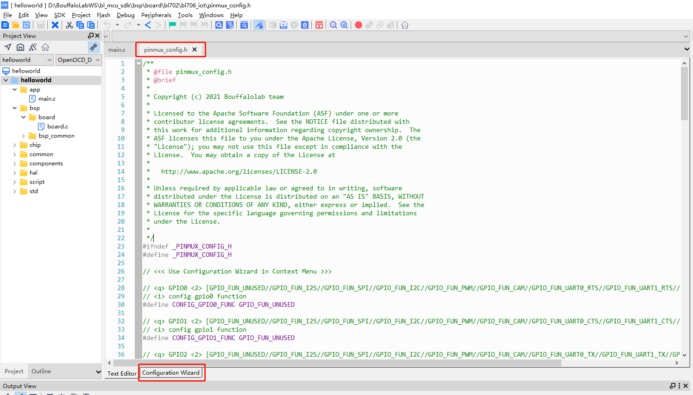
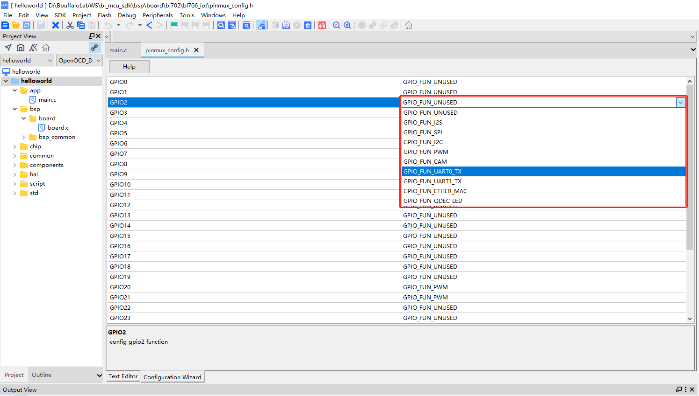

7. Board 配置系统使用指南¶
为了践行 一切皆文件 的思想，我们针对嵌入式应用不同的硬件配置需求，提出了一套 Board 配置系统。 Board 配置系统 主要是用于嵌入式应用中的时钟、GPIO 、外设默认配置三个基本元素进行初始化的配置系统。
Board 配置系统 包含三个配置文件，以及一个 bl_config_wizard 图形化配置软件
- clock_config.h 时钟配置头文件
- peripheral_config.h 外设配置头文件
- pinmux_config.h 引脚功能配置头文件
- bl_config_wizard 图形化界面配置上述三类文件
用户只需要修改三个配置文件，系统会自动初始化，从而无需在用户程序中，调用一系列的复杂冗长的初始化函数。 Boufflao Lab 为方便用户快速简便的生成项目对应的配置文件，提供了 bl_config_wizard 配置软件，目前已支持引脚配置和时钟配置功能，但外设配置功能正处于开发阶段。
bl_config_wizard 支持 PC 端在线配置，目前不支持移动终端在线配置。
bl_config_wizard 软件预览
7.1. Board 配置系统中各文件功能介绍¶
Board 系统主要针对不同的板子来使用，不同的板子创建不同的 board 文件，放在 bsp/board 目录下，并且一个 board 文件，在 引脚不冲突 的情况下，可以共享给不同的 demo 使用，无需再创建多个工程，减少工程文件大小。
错误
如果引脚冲突，并且非要使用一个 board 文件，请自行修改引脚
7.1.1. board.c¶
board.c 主要对时钟、引脚进行初始化
7.1.2. blxxx_config.h¶
blxxx_config.h 主要是包含一些头文件，给 HAL 层驱动使用。
提示
以上两个文件无需用户更改，并且相同的 MCU 可以直接复制粘贴到自己的 board 目录使用
7.1.3. clock_config.h¶
clock_config.h 主要配置系统和外设的时钟源以及分频系统。
7.1.4. peripheral_config.h¶
peripheral_config.h 主要包含外设的使能以及参数的配置。
警告
以 #define BSP_USING_XXX 开头的宏，用来开启外设的配置，如果没有使能宏，则无法使用该外设的所有函数
警告
以 XXX_CONFIG 开头的宏，用来初始化外设的配置，后面调用 device_open 来使用该配置
7.1.5. pinmux_config.h¶
pinmux_config.h 主要配置外设的 GPIO 引脚功能。
警告
在 mcu sdk 中，所有 demo 共享这个文件，因此有些 demo 是不能使用的，需要频繁修改该文件的引脚功能配置。如果用户已经定好了引脚的分配，则不用频繁修改。
7.2. clock_config.h 的生成与修改¶
7.2.1. 基于 bl_config_wizard 工具生成 clock_config.h 文件¶
- 选择 XCLK 和 PLL 的时钟源； XCLK 和 PLL 时钟源始终保持一致，可以选择
内部 32M RC 震荡电路产生的时钟，也可以选择外部 32M 晶振产生的时钟。
xclk 时钟源选择
- 选择 MCU 的时钟源，并配置 MCU 和 BCLK 的分频系数； MCU 可以选择 XCLK 时钟或者 PLL 输出的某一路时钟作为时钟源， PLL 输出的时钟频率分别是
57.6MHz、144MHz和96MHz。
MCU 时钟源选择
提示
MCU 时钟又称为 FCLK 。
提示
修改 DIV 时，如果时钟值未刷新，请敲回车。
- 选择 PMU 的时钟源。
PMU 时钟源选择
提示
PMU 时钟又称 F32K_CLK
- 选择 UART 的时钟源，并配置其分频系数； UART 可以选择 FCLK 或者 PLL_96M 作为时钟源。
UART 时钟源选择与分频
- 配置 I2C 和 SPI 时钟的分频系数； I2C 、 SPI 有唯一的时钟源 BCLK ， BCLK 是 MCU 时钟经过 BCLK_DIV 分频后的时钟。
I2C 和 SPI 时钟分频
- 选择 PWM 的时钟源，并配置其分频系数； PWM 可以选择 XTAL_32K 、 BCLK 或者 F32K_CLK 时钟作为时钟源。

PWM 时钟源选择
- 配置 IR 时钟的分频系数； IR 使用 XCLK 时钟作为时钟源，拥有独立的分频器。
IR 时钟分频器
- 选择 I2S 的时钟源； I2S 的时钟来自于 AUPLL 输出的时钟，AUPLL 可以选择输出
12.288MHz、11.2896MHz、5.6448MHz、24.576MMHz和24MMHz。
I2S 时钟源选择
- 选择 ADC 的时钟源，并配置其分频系数； ADC 可以选择 AUPLL 或者 XCLK 作为时钟源。
ADC 时钟源选择与分频
警告
ADC 时钟 不能大于 2MHz
- 选择 DAC 的时钟源，并配置其分频系数； DAC 可以选择 AUPLL 或者 XCLK 作为时钟源。
DAC 时钟源选择与分频
警告
DAC 时钟 不能大于 512KHz
- 选择 QDEC 和 KYS 的时钟源，并配置其分频系数； QDEC 和 KYS 共享一个时钟源，可以选择 XCLK 或者 F32K_CLK。
QDEC 和 KYS 时钟源选择
提示
建议 QDEC 和 KYS 使用 1MHz 。
- 选择 CAM 的时钟源，并配置其分频系数； CAM 可以选择 PLL_96M 或者 F32K_CLK 作为时钟源。
CAM 时钟源选择
- 选择 Timer0 、 Timer1 的时钟源，并配置其分频系数。
Timer 时钟源选择
- 选择 WDT 的时钟源，并配置其分频系数。
WDT 时钟源选择
- 导出配置文件。
提示
重置 按键用于恢复默认时钟配置。
7.3. pinmux_config.h 的生成与修改¶
7.3.1. 基于 bl_config_wizard 工具生成 pinmux_config.h 文件¶
- 在窗口栏选择
引脚&外设配置； - 选择 MCU 型号，目前支持
BL706引脚配置、BL704引脚配置、BL702引脚配置； - 选择引脚的功能，以
BL706引脚配置为例，点击 PAD_GPIO_XX 的下拉框，选择需要的功能，如图所示；
选择引脚功能图
- 配置好所有引脚功能后，点击
导出配置文件，然后可在弹框内选择路径和修改文件名，如图所示；
导出配置文件图
7.3.2. 基于 bl_config_wizard 工具修改 pinmux_config.h 文件¶
往往在使用中，我们不是生成一个新的 pinmux_config.h 文件，而是在原有的 pinmux_config.h 文件基础上做修改，bl_config_wizard 支持这样的需求。
- 在窗口栏选择
引脚&外设配置； - 选择 MCU 型号，目前支持
BL706引脚配置、BL704引脚配置、BL702引脚配置； - 点击
导入配置文件，然后在弹框内选择 pinmux_config.h 文件； - 选择需要修改的引脚，点击其下拉框，更改引脚功能；
- 修改完成后，点击
导出配置文件，然后可在弹框内选择路径和修改文件名。
7.3.3. 在 CDK 工具中修改 pinmux_config.h 文件¶
pinmux_config.h 同时还支持在 CDK 使用图形配置向导进行相应引脚功能的调整
直接将 pinmux_config.h 文件拖入 CDK 文本编辑界面，在文本编辑下方即可看到
Configuration Wizard标签图形配置向导
点击
Configuration Wizard标签，即可打开图形配置向导界面通过选择下拉框即可选择该引脚支持的功能
图形配置向导设置引脚功能
图形配置向导的具体功能和代码规则，详情请参考 CDK Help 的图形配置向导章节
7.4. 与 STM32CUBEMX 配置工具的区别¶
STM32CUBEMX 也是一个配置时钟、外设和 GPIO 初始化的工具，最终生成一个完整的工程，初始化都放在 main.c 的最开始 ，GPIO 和外设初始化底层会调用到 stm32xxx_hal_msp.c 中。
/* MCU Configuration--------------------------------------------------------*/
/* Reset of all peripherals, Initializes the Flash interface and the Systick. */
HAL_Init();
/* USER CODE BEGIN Init */
/* USER CODE END Init */
/* Configure the system clock */
SystemClock_Config();
/* USER CODE BEGIN SysInit */
/* USER CODE END SysInit */
/* Initialize all configured peripherals */
MX_GPIO_Init();
MX_USART1_UART_Init();
MX_QUADSPI_Init();
void HAL_UART_MspInit(UART_HandleTypeDef* huart)
{
GPIO_InitTypeDef GPIO_InitStruct = {0};
if(huart->Instance==UART5)
{
/* USER CODE BEGIN UART5_MspInit 0 */
/* USER CODE END UART5_MspInit 0 */
/* Peripheral clock enable */
__HAL_RCC_UART5_CLK_ENABLE();
__HAL_RCC_GPIOB_CLK_ENABLE();
/**UART5 GPIO Configuration
PB12 ------> UART5_RX
PB13 ------> UART5_TX
*/
GPIO_InitStruct.Pin = GPIO_PIN_12|GPIO_PIN_13;
GPIO_InitStruct.Mode = GPIO_MODE_AF_PP;
GPIO_InitStruct.Pull = GPIO_NOPULL;
GPIO_InitStruct.Speed = GPIO_SPEED_FREQ_LOW;
GPIO_InitStruct.Alternate = GPIO_AF14_UART5;
HAL_GPIO_Init(GPIOB, &GPIO_InitStruct);
/* UART5 interrupt Init */
HAL_NVIC_SetPriority(UART5_IRQn, 0, 0);
HAL_NVIC_EnableIRQ(UART5_IRQn);
/* USER CODE BEGIN UART5_MspInit 1 */
/* USER CODE END UART5_MspInit 1 */
}
}
提示
stm32 生成的工程都是对一个工程起作用，不能够同时编译多个工程。如果使用多个工程，就要生成多个上述两个文件。在使用多个工程时，会间接增加文件大小，增加重复文件。